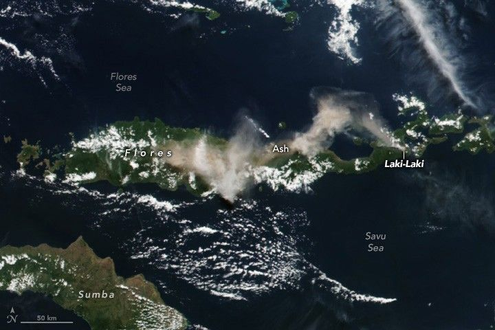

Towering Plume From Mount Lewotobi Laki-Laki
Mount Lewotobi Laki-Laki, a volcano on the Indonesian island of Flores, erupted on July 7, 2025, propelling a column of ash 18 kilometers (11 miles) into the air. The eruption deposited ash on villages and generated pyroclastic flows that traveled 5 kilometers (3 miles) down its slopes, according to news reports. Authorities advised nearby communities to remain on alert for potential lahars triggered by heavy rains.
Mount Lewotobi is composed of two adjacent stratovolcanoes: Laki-Laki and Perempuan, which lie less than 2 kilometers apart. Laki-Laki, the more active of the two, began erupting around 11 a.m. local time on July 7, according to Indonesia’s volcano monitoring agency. At about 2 p.m., the VIIRS (Visible Infrared Imaging Radiometer Suite) on the Suomi NPP satellite acquired this image of its volcanic plume drifting westward. The eruption was still ongoing as of that evening, the agency reported.
Several weeks prior, officials had raised the volcano’s alert status to the highest level when it showed an increase in earthquake activity, inflation of the ground surface, and other signs of an imminent eruption. Volcanic emissions from eruptions in both June and July caused dozens of flight cancellations to and from Bali and other airports in the region, according to news reports.
This latest event is a continuation of eruptive activity occurring at Laki-Laki since late 2023. During an especially intense period of activity in November 2024, several explosive eruptions generated deadly volcanic debris flows and darkened the landscape with ash. The conical Laki-Laki has been frequently active since the 19th century, while the taller and broader Perempuan erupted most recently in 1921 and 1935.